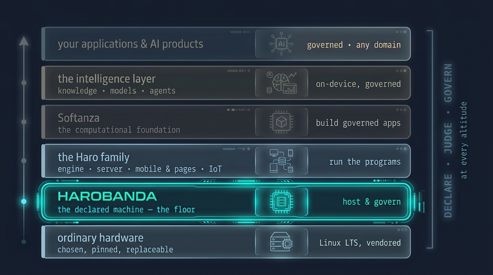
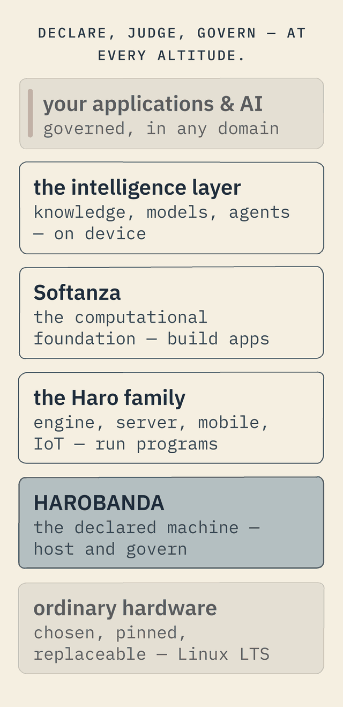

AI & agents
A foundation for governed applications — and the floor a sovereign agent needs.
The computational foundation above the machine, the intelligence layer it reaches, and why an AI agent that runs here cannot escape or abuse the box it runs on.
The full stack · one idea, at every altitude
A foundation for governed applications — in any domain.
The idea does not stop at the floor. On top of the machine sits Softanza, a computational foundation for building enterprise-strength applications in any domain — and for building AI — the same way you build the machine: declared, judged, governed. An application described this way carries its data, its rules, its identities and its permissions as declared facts, so an enterprise or a regulator can read what it is and what it does, at every level.
It reaches to the intelligence layer — knowledge, models and agents as governed capabilities, on-device where the data must stay — so an AI product is sovereign the same way the machine is. Below, one such agent, and how Harobanda keeps it in bounds.


One method, from the hardware to the intelligence layer: declare, judge, govern. Own the floor, and the whole stack above it can be sovereign too.